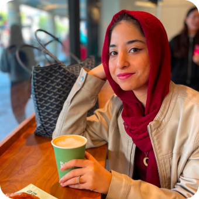
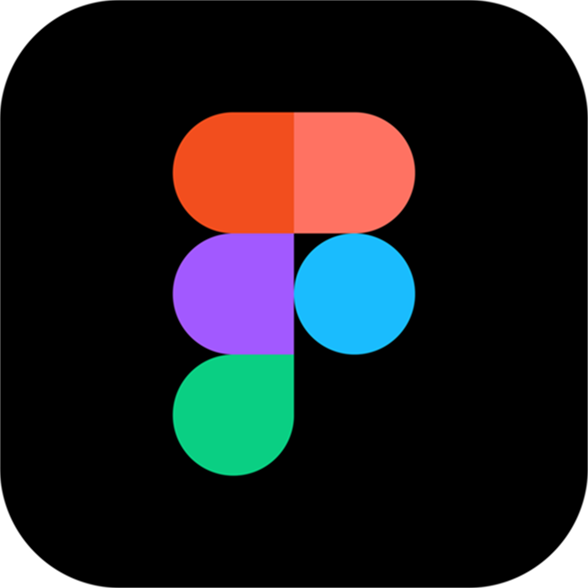
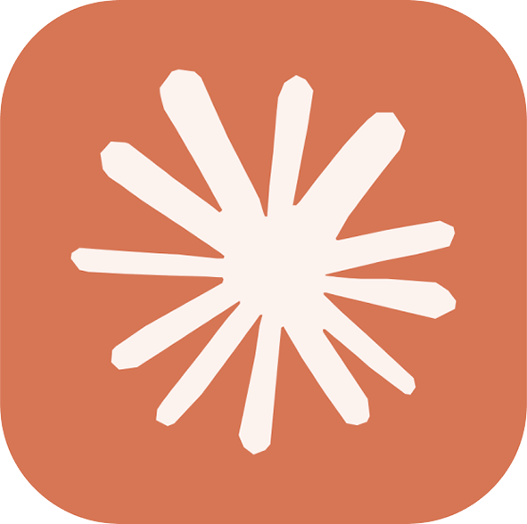
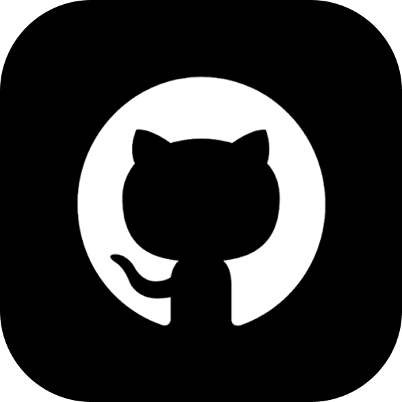
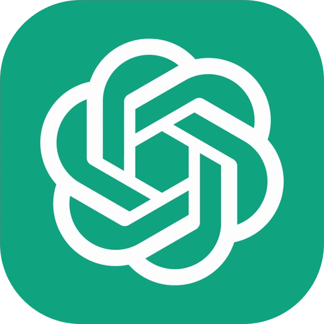
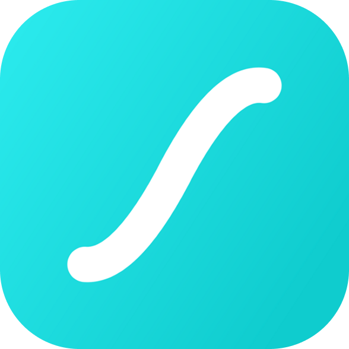
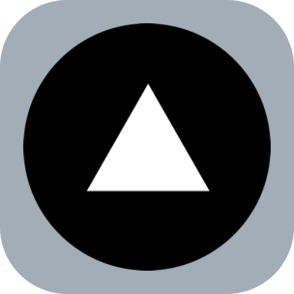
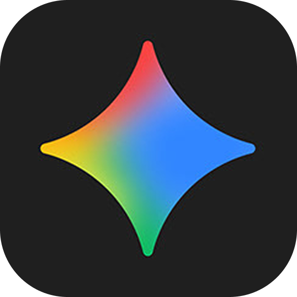
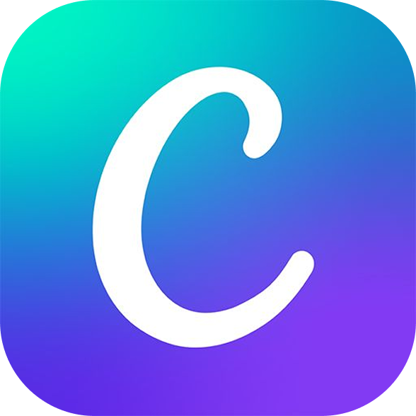
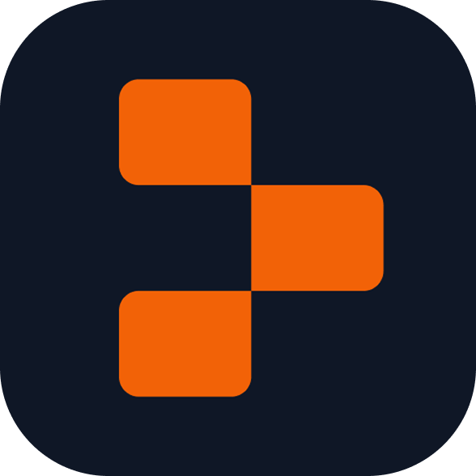

Me; In a Nutshell
I’m Eeman, a product designer with 4+ yrs experience. I specialize in design systems, usability audits, and analyzing data trends to craft end-to-end UXD for web, mobile, and SaaS platforms. With a background in architecture and UX certifications, I bring a strong blend of creative, analytical, and cross-functional collaboration skills.
Background:
-
Nov’24 - PresentEducative
Product Designer • Full-time
-
Jul’23 - Oct’24Tkxel
UX/UI Designer • Full-time
-
Feb’23 - Jul’23AIPixal
UX Designer • Full-time
-
Sep’22 - Jan’23Google UX Design
7 course certification offered by coursera
-
Sep’17 - Jan’22Bilkent University
Bachelors in Architecture (B.Arch)
Toolkit:


Miro






